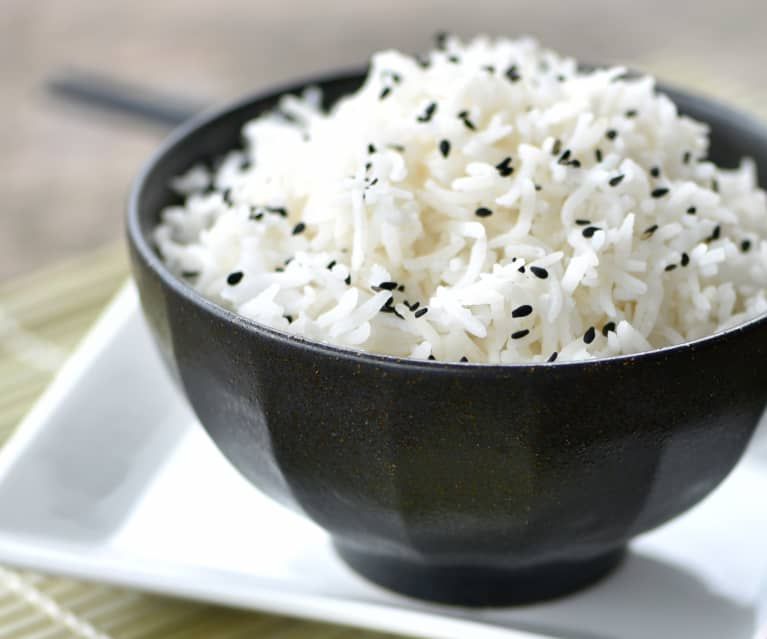

Arroz

Los chilaquiles màs deliciosos de todo Tlaxcala
Ahora veremos una receta para preparar estos deliciosos, suculentos, excelsos y sublimes chilaquiles
Ingredientes
- Una taza de arroz
- Un cachito de cebolla
- Medio diente de ajo
- Aceite
- Sal al gusto
Pasos
- Wash the rice, put it in a strainer inside another dish so the rice stays suspended in water, wait 10 minutes and drop the water, put the rice on the faucet and squeeze it till water going through are no longer white
- On the blender put two cups of water, along with the onion, the garlic and half spoonie of salt, blend it for 3 minutes
- Put some oil in a dish to prepare the rice, wait to it to be hot and put the rice in it, stear it constantly till it it transparents
- Add the blended garlic and onion and cover the dish to maximum fire, when the water starts to boil reduce the flame to the minimum and wait till the water evaporates
- Once the water evaporates we need to check constantly and move the rice so it won't stick, once it has enough sice and can be easily eated take out from the fire
- Enjoy